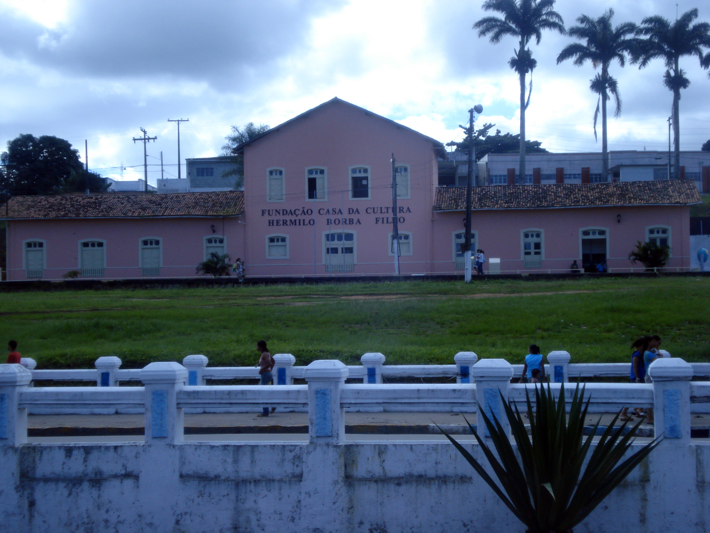

Além da carga histórica da cidade, dispõe-se cachoeiras, bicas, corredeiras e caminhadas ecológicas nas reservas de mata atlântica do município.
Outros destaques são as cachoeiras: Caritó, Véu da Noiva, Mágico e a localizada no Engenho Serra Azul.
A Véu da Noiva possui três quedas d'água, sendo a mais alta com 5 metros. A Corredeira do Oratório é formada pelas águas do Rio Una.
Cine Teatro da Cidade